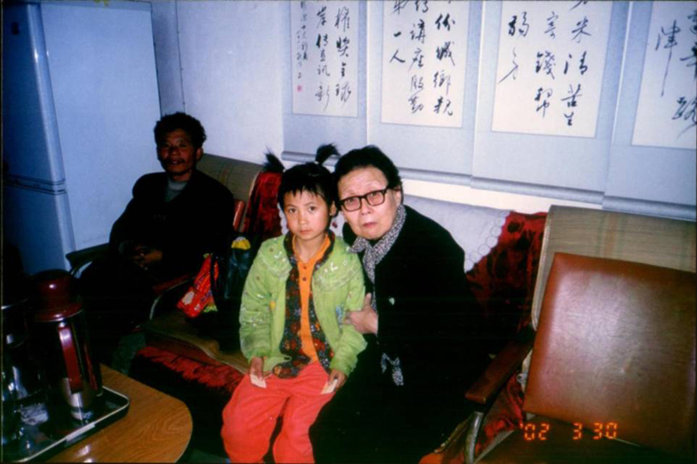
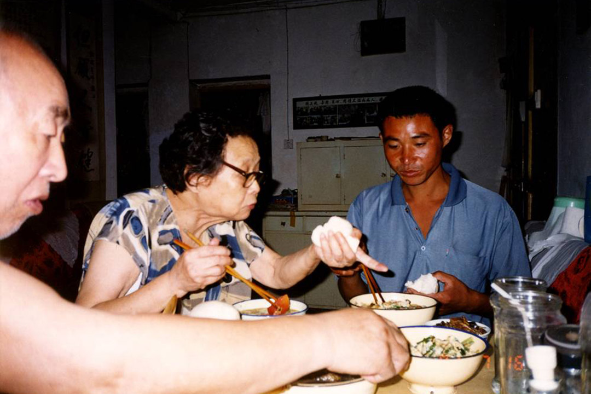
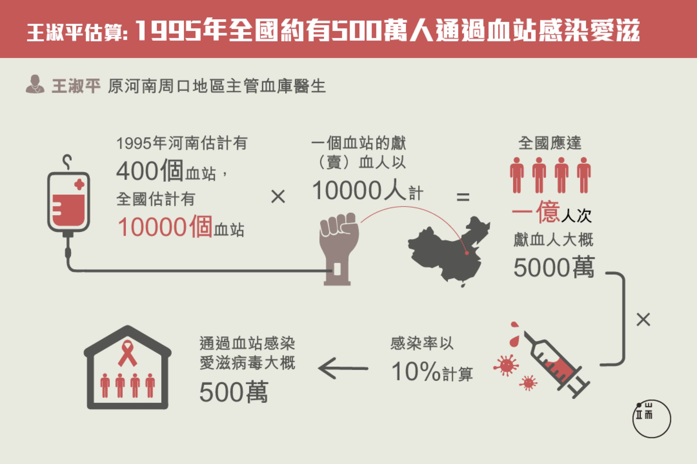
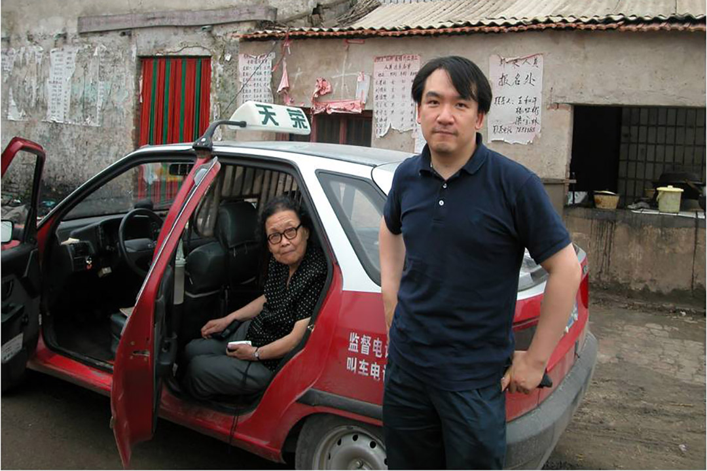
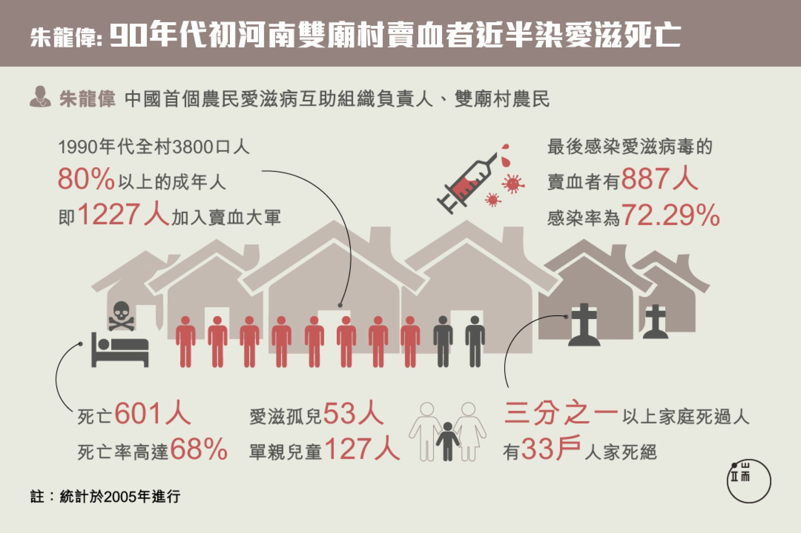
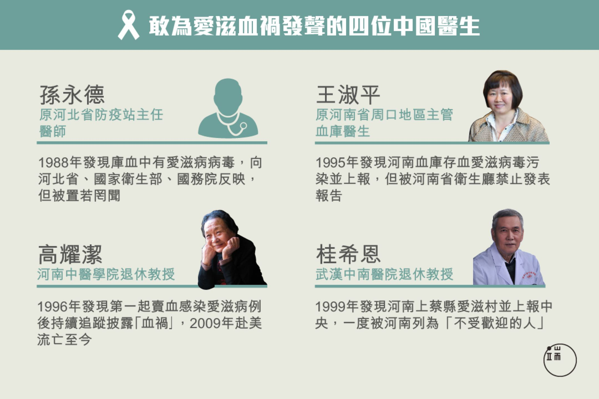
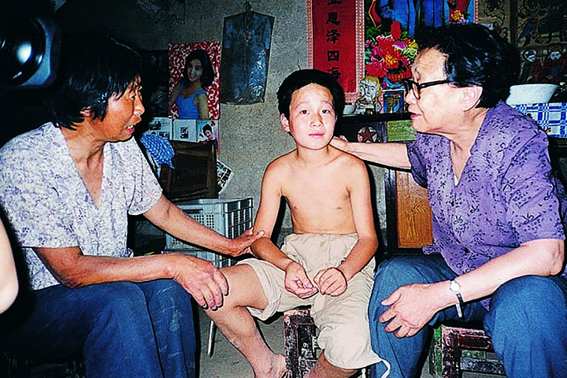
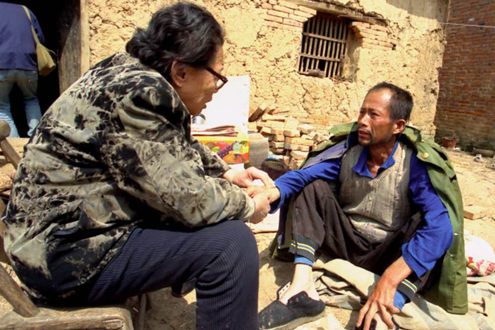

憤怒仁醫高耀潔：說出真相，是我天定的使命、生存的目的｜端傳媒 Initium Media
Table of Contents
90歲的高耀潔還在生氣，為了揭開愛滋血禍的黑幕、救助病人，她傾盡所有、去國流亡、著述不息，就算生命結束，「高耀潔星」也將注視着這場世紀災難。
特約撰稿人 羅四鴒 發自紐約
刊登於 2016-12-19

Figure 1: 高耀潔收留愛滋孤兒。
十月初紐約，天氣已經轉涼。一陣風吹落一些雨，還有一些落葉。
高耀潔六點便起床了。12月19日，按中國虛歲算，高耀潔整整九十歲了。黑短髮，讓她看上去比實際年齡年輕，但生活得需要人照顧。公寓只有一室一廳，她住在裏面，護工住在外面。自今年7月開始，有24小時護工照顧她，一個星期有三位護工到她家，每一位護工做2到3天。
一大早，高耀潔便告訴護工，八點有人來採訪。在護工幫助下，她起床、洗漱。然後她打開電腦，收發郵件。因為耳朵基本失聰，郵箱成為她與外界聯繫的唯 一方式。如今，她在美國也很少出門，坐累了，便拿着助行器在家裏走走，或是在床上躺躺。不過，每天，她至少會收到6封郵件，或是愛滋病人的事情，或是採訪 的事情，或是前來拜訪的事情，或是其他別的事情。高耀潔一般都會簡短的回覆：她用寫字板打字，比較慢也比較吃力。
七點多的時候，高耀潔開始吃她簡單的早餐。冷的、硬的、甜的，她都不能吃了，護工給她做得最多的是麪食。三位護工中，有一位護工會蒸饃饃。這讓高耀 潔非常開心，時不時讓這位護工蒸饃，一次一袋麪粉大概兩磅，蒸一次饃饃可以吃好幾個星期。一些朋友知道高耀潔生活困難，所以來看她的時候，就給她帶麪粉或 是麪條，以及雞蛋和豆腐，因為別的東西，她都不能吃了。
「我現在正生氣，為什麼呢？因為國內多年來登記愛滋病病人，感染者一人給150塊一個月，若是發病了就給200一個月。但是登記的時候，不讓病人說是賣血導致的愛滋病，要說是商業傳播或是性傳播。」
八點，記者準時到了。今年8月，一場嚴重的肺炎，讓高耀潔住院一個星期，健康也大為下降。10月初，高耀潔為自己寫下一個鄭重申明，簡單交代了自己 的後事，希望自己去世後火化，骨灰由兒子郭鋤非撒入黃河，不舉行任何儀式。高耀潔還希望透過申明讓全世界知道，「我生前的建樹與去世，不應成為他人沽名釣 譽的工具。」
沒有寒暄，高耀潔直接進入主題：「我現在正生氣，為什麼呢？因為國內多年來登記愛滋病病人，感染者一人給150塊一個月，若是發病了就給200一個 月。但是登記的時候，不讓病人說是賣血導致的愛滋病，要說是商業傳播或是性傳播。」就這樣，訪談在高耀潔的憤怒中開始了。因為聽不見，所以基本上是高耀潔 一個人在說，偶爾在紙上寫，因為她帶有濃重的河南口音的普通話，有時聽不懂。幸虧，高耀潔有驚人的記憶力，她不僅清楚地記得自己人生中的一些重要日子，還 記得很多細節。她的敘述生動，快人快語，時不時對自己荒誕的一生進行自嘲。而她一生中，那些充滿艱辛與人性的故事，說也說不完。
十點，又有一位日本學者來訪。十二點，一對夫妻和他們一歲多的兒子來了，整整一上午，高耀潔都在和來訪者說愛滋病人的故事，孩子的到來讓壓抑的氣氛 變得輕鬆活潑起來。通常，高耀潔在上午和下午的時候都需要躺在床上小睡一會。這一天來訪者較多，她一直坐着，腿也有些腫了。若是沒有客人，高耀潔便工作， 繼續寫她的書：把中國愛滋病禍的真相寫出來，成為她流亡美國之後的生活的唯一目標。
20年前一場會診，揭開「血漿經濟」背後的愛滋病禍
1996年4月，鄭州某醫院讓年近七十的高耀潔參加會診，有一位女病人高燒不退，住入醫院十六天未能確診。高耀潔會診後，懷疑是愛滋病，要求對病人驗血，驗血證明了高耀潔的判斷是對的，病人的HIV抗體顯陽性。十幾天後，這位病人去世了，只42歲。
一位善良的沒有任何不良嗜好的家庭婦女為何會染上愛滋病呢？高耀潔開始了調查，發現原因是她曾經因手術輸血，血來自血庫。高耀潔斷定，既然血庫的血受感染，受害者肯定不止這一位，於是她展開了調查：愛滋病到底從何而來？到底有多少人感染上了愛滋病？
耿直的高耀潔當時還不知道，這一問即將揭開一場牽涉數百萬人生死的愛滋血禍，她本應安度晚年的人生，也將因此徹底扭轉。
這場災難來自於當年政府推行的「血漿經濟」。1983年，中國一位血友病患者（註：病人先天缺乏凝血因子，導致凝血功能障礙，不易止血）因注射進口美國的血液製品而感染上愛滋病毒；第二年，中國禁止進口血漿、人血白蛋白等血液製品，以便將愛滋病毒拒之國門之外，然而這又導致中國臨床用的血製品短缺，於是「血漿經濟」迅速升温。

Figure 2: 愛滋病病人在高耀潔家吃飯。
血漿經濟源於一項技術「血漿單採技術」，即將獻漿者的血液抽出後，分離成血漿與血球兩部分，紅血球輸回獻血員體內，血漿用於製作生物製品。這項技術 於1979年在天津中心血站試行，很快在全國推廣。到了八十年代末九十年代初，在政府的大力推行下，血漿站開始在中原地區陸續建立，一些地方甚至將「血漿 經濟」看作是帶領農民脱貧致富的第三產業。
「如果說省衞生廳長劉全喜是禍首，那麼李長春（註：1990年至1998年歷任河南省委副書記、省長、省委書記）等則是導致這場血禍的罪魁。這種人為大災難，前所未有。然而，造成這場血禍的責任人，至今沒有一個受到追究的，也沒有一句道歉的話。」
在1995年前後，河南省僅「合法」的官辦血站就有230多家，非法的血站不計其數。當時宣傳語有：「借你一點血，還給你錢。賣血對健康有好處，可 以預防高血壓，可以治療高血壓。」此時，獻一次血漿，可以得營養費40到80元不等，對於農民來說，這也是一個巨大誘惑-–—當年，河南最窮的20%人口年 均收入才700元出頭，因此，當時有大批的農民去賣血，甚至不少人專門賣血為生。
然而，血漿單採技術也是危險的，尤其是離體的血液不可以多人混合分離血漿和紅細胞，否則回輸體內的血液會染上各種病毒。然而很多血站常年混合操作，許多地方操作不規範。如今，已經不知道愛滋病毒是何時開始在這些捐血-採血-輸血鏈條上氾濫起來的。
據河南省社科院劉倩研究員調查顯示，早在1992年，上海某家生物製品廠家就反饋有數名獻漿員的血漿HIV顯陽性。1994年，上海萊氏生物製品公 司反饋安徽阜陽地區獻漿員李某的血漿HIV顯陽性。但這些反饋沒有引起警惕，胡作非為繼續大行其道。與此同時，採漿站正在中原地區遍地開花，1992年， 河南省衞生廳與省紅字血液中心簽訂承包經營合同，目標超過歷年最高水平兩倍之多。
「我能在全中國找到22000個墳墓，這算不算大屠殺呢？」
愛滋病毒的潛伏期通常是4年到8年，高耀潔在1996年遇到第一位愛滋病人的時候，正是愛滋病毒開始進入大規模爆發的時期。到底有多少人感染上愛滋病呢？高耀潔說，這是一個很難回答的問題，由於政府全力掩蓋愛滋病的實情，無人也無法去進行明確的統計。
高耀潔說，目前，只有河南周口地區主管血庫的醫生王淑平對愛滋病疫情做過統計。1995年，王淑平收集各地血漿採樣測設，結果顯示HIV抗體「陽 性」反應率均在13%上下。當時河南估計有400個血站，全國有10000個，一個血站的獻（賣）血人以10000計，全國應達一億人次，保守估計獻血人 大概5000萬，以10%的感染率計算，那麼通過血站感染愛滋病毒大概有500萬。

Figure 3: 20多年前，河南醫生王淑平已就「血漿經濟」引發的愛滋病禍作出調研，但問題至今被否定、掩蓋。
1995年到2002年，武漢中南醫院的桂希恩教授深入河南駐馬店地區農村做過百例以上的案例調查，結果顯示賣血人員愛滋病病毒感染率在60%以上。到現在，20多年，從時間上保守推算，愛滋病病毒攜帶者與因愛滋病死亡者的總人數應在幾百萬，甚至上千萬。
2001年9月30日，高耀潔去河南周口地區調查，聽說某村愛滋病人特別多，於是她臨時跑去。剛進村，聽到一個孩子叫：「下來！下來！」高耀潔尋聲 而去，推開一個破爛不堪的院子，走進北屋，看見一位年輕的婦人懸梁自盡了，一位兩歲多的男孩，滿臉鼻涕眼淚，一邊哭喊一邊啃媽媽的腳後跟。原來這位婦人和 她的丈夫16歲就開始賣血，半年前丈夫去世，女人貧病交加，鄰居親人全部斷絕往來，無奈也只好自殺。一個多月後，那位2歲的男孩也去世，他也是愛滋病感染 者。
2015年11月21日，12歲的沈録（化名）死於愛滋病。沈録出生的時候，由於母親的奶水不足，同村另一位賣過血的婦人出於好心，餵過他母乳。三 年後，這位餵奶的婦人被查出有愛滋病。這時，沈録也經常生病，時常發燒、咳嗽、拉肚子，發育不良。沈録的父母抱着他去縣防疫站檢查，這才查出沈録也感染了 愛滋病。治了近十年，最終未能挽回孩子的性命。
「這個孩子做錯了什麼？這個家庭做錯了什麼？這是什麼因果？」高耀潔為此感到憤怒與不解。然而在她收集的材料中，這不是孤例，被迫自殺或是全家死絕的故事，不勝枚舉。

Figure 4: 高耀潔在1996年遇到第一位愛滋病人的時候，正是愛滋病毒開始進入大規模爆發的時期。圖為高耀潔前往愛滋村留影。
「天安門母親丁子霖說，她找到了220具屍體，說『六四』是大屠殺；我說，我能在全中國找到因賣血或輸血感染愛滋病死亡者的22,000個墳墓，這算不算大屠殺呢？可惜啊，這些人都沒文化，不會說大屠殺這樣的話，又以為自己得的是髒病，就認命。可憐啊！」
「比如我舉個例子，據中國首個農民愛滋病互助組織負責人、河南省商丘市柘城縣崗王鄉雙廟村農民朱龍偉。他的妻子李霞在2000年賣血染上愛滋病，吃 奶的兒子也染上了。為了救妻兒，他自學了解防治愛滋病的知識，在農村成立互助組織。他2005年的統計，河南商丘市六柘城縣雙廟村，1990年代初響應政 府『以血致富』的號召，全村3800口人，80%以上的成年人即1227人加入賣血大軍，有的家庭15歲以上的人全部出動，最後感染愛滋病毒的賣血者有 887人，感染率為72.29%；死亡601人，死亡率高達68%，三分之一以上家庭都死過人，有33戶人家死絕，還有愛滋孤兒53人，單親兒童127 人。在河南，導致至少30多萬賣血的農民感染愛滋病病毒，至少是10多萬感染者命喪黃泉。我在《疫症病案一百例》中引用過他的一些文章和數據。如果說省衞 生廳長劉全喜是禍首，那麼李長春（註：1990年至1998年歷任河南省委副書記、省長、省委書記）等則是導致這場血禍的罪魁。這種人為大災難，前所未有。然而，造成這場血禍的責任人，至今沒有一個受到追究的，也沒有一句道歉的話。」

Figure 5: 像雙廟村這樣的愛滋村，在河南還有很多。
高耀潔一邊說，一邊翻開她的書《鏡頭下的真相：記中國愛滋病實況》，翻着裏面一張張照片，一個一個悲傷的故事，綿延不斷，講也講不完。起初幾年，她見到的多是在病床上痛苦等死的病人；隨後幾年，她見到的是綿延的墳墓和那些孤苦無依的愛滋孤兒與老人。
「天安門母親丁子霖說，她找到了220具屍體，說『六四』是大屠殺；我說，我能在全中國找到因賣血或輸血感染愛滋病死亡者的22,000個墳墓，這 算不算大屠殺呢？」高耀潔一再追問，溝壑縱橫的臉上，充滿了悲憤。「可惜啊，這些人都沒文化，不會說大屠殺這樣的話，又以為自己得的是髒病，就認命。可憐 啊！」說着，高耀潔擦了擦眼睛。
不僅在河南省的八處愛滋病重疫區（駐馬店、周口、開封、商丘、信陽、南陽、漯河、許昌），其實愛滋病重疫區，更多戶孤獨老人，他們的子女全因「血 禍」走上不歸之路，只剩下老人帶着年幼的孫子孫女。民間有個打油詩，是愛滋村的寫照：「多少傷痕在疼痛，多少冤屈無影蹤。多少荒野飄孤魂，多少冤鬼在哀 鳴。」
「如果有一天我也消失了，中國還有誰會為此發聲？」
《高潔的靈魂：高耀潔回憶錄》一書序言《仁者之怒》為河南《大河報》原常務副總編馬雲龍所寫，其中有言云：「震動世界的是高耀潔的憤怒，仁者之怒，天使之怒。」如今，讓高耀潔最憤怒的事情，依然是大陸當局，尤其是河南血站官員們，對愛滋病疫情真相的百般阻擾和掩蓋。
「你知道什麼叫馬屁精嗎？」高耀潔問，「馬屁精就是那些專門拍着上面官員馬屁的人，不讓世人知道真相，掩蓋真相。不讓他們說是賣血，說是同性戀或是 吸毒等商業傳播。2012年，河南還出台『平墳運動』，這個平墳運動從愛滋病疫區開始，僅周口一帶平掉200多萬墳墓。墳墓多證明死者多，這是河南省地方 政府強制平墳的重要原因之一：消除愛滋病災難死亡人數的證據。」
在高耀潔以及這場愛滋病禍的研究者看來，這場大災難其實是可以控制的，之所以弄到最後這麼可怕的地步，與當局的不作為，甚至刻意隱瞞打擊有關係。
雖然高耀潔被視為「民間防艾第一人」，但實際上，她說自己並不是第一個發現血漿經濟所致的愛滋病禍的。

Figure 6: 高耀潔說：「中國醫學界的醫生那麼多，目前我知道的站出來的醫務界人士也就這麼幾位吧，非常可悲。」
「第一位提出警告的是河北省防疫站主任醫師孫永德，他在1988年就上書衞生部，鬧到國務院，但沒有人聽他的。我們必須記住他，他才是第一人。第二 位是王淑平，她當時是河南周口地區主管血庫的醫生，她把發現的情況寫成報告上報，河南省衞生廳派專家前往『調查處理』，結果卻認為王淑平的實驗不合格，不 允許她發表報告，1996年11月，王淑平所在的臨床檢驗中心被關閉，此後失業的王淑平不得不離開河南。我是第三個，我是1996年4月才遇到第一位愛滋 病人的。此後，還有湖北的桂希恩教授，1999年他發現愛滋村，他多次去愛滋村還把病人請回家。中國醫學界的醫生那麼多，目前我知道的站出來的醫務界人士 也就這麼幾位吧，非常可悲。」
2003年，吳儀副總理來到河南考查愛滋病疫區，接見了高耀潔，河南省隨後向愛滋病疫情最嚴重的38愛滋村排出了工作組和醫療隊。中國官方基本承認 了這場災禍的存在，但高耀潔的憤怒依然無法停止，因為官方依然掩蓋愛滋病禍的真實原因，把原因歸結為吸毒和性交；其次愛滋病突然又變成了一些人的「搖錢 樹」，當地官員的黑手直接伸向世界衞生組織和海內外慈善機構的捐款。

Figure 7: 高耀潔收養愛滋孤兒。
為此，高耀潔非常注意錢方面的問題。她從不接受捐贈，她對對愛滋病人的捐助都來自她個人收入，花了上百萬，幾乎是她所有的積蓄和獲得各種獎項所拿到 的獎金。此外，高耀潔不得不多次發表聲明和寫下遺囑，她不接受任何以愛滋病名義進行捐款，也不承認任何以她的名義成立的基金會。這就是她在遺囑裏一再寫下 的：「我生前的建樹和去世不應成為他人沽名釣譽的工具」。
獲得吳儀接見並沒有讓高耀潔的調查和呼籲變得少一點阻礙，反而在那之後，高耀潔發現，她的人身自由越來越受到控制了，電話被監聽，出門被跟梢，發展到最嚴重的時候，幾十個警察日夜包圍她的家，她不允許出門，電話被切斷，連女兒也禁止來看望。
「你知道什麼叫馬屁精嗎？馬屁精就是那些專門拍着上面官員馬屁的人，不讓世人知道真相，掩蓋真相。不讓他們說是賣血，說是同性戀或是吸毒等商業傳播。」
「2005年，上海復旦大學 的高燕寧教授寫了一本四十餘萬字的綜述，這本書即將出版。在這本書中，高教授參閲了217名有志之士對『血禍』的呼籲，參加呼籲的人數高達613人次，其 結果是非但不被重視，反而遭到打壓，於是這種聲音逐漸消失，活躍分子逐漸匿跡……我大概是少數幾個堅持發出聲音的人之一 。設想有一天，如果我也因為各種原因（病重？監禁？死亡或是失蹤？）而銷聲匿跡了，中國還有誰會為此發出聲音呢？」
在自己的回憶錄中，高耀潔說到自己出走的原因：「發出聲音說出真相，對我來說是天定的使命，生存下去的唯一目的。」
2009年3月的一天，高耀潔接到法國駐華大使館的電話，法國將向她頒發一年一度的婦女人權獎。5月6日，高耀潔發現家裏的氣氛不對了，電話網絡都 出了問題，小區門口停着三輛警車。害怕再次失去徹底的自由，高耀潔當機立斷，連中飯都沒有吃，假牙也沒有戴，只帶着裝有多年來收集的愛滋病調查的資料的硬 盤，匆匆離家出走，從河南，到北京，又四川、廣東，最後到了美國。
「『娘打兒，兒不記仇』，我做不到，也不同意」
「絕美的光芒，野性而無華，那些艱辛悲慘和痛苦的人性，都埋在生而為人的困窘之下，說也說不完。」這是意大利電影《絕美之城》（La Grande Bellezza）中的一段台詞。在無華的高耀潔身上，很容易發現這種絕美的光芒，這種光芒來自她剛正不阿的個性。
高耀潔說，我並不關心政治。高耀潔是一名醫生，她的願望就是做一名好醫生。然而，即便是這麼一個小小的願望，也被中國的政治風暴幾度擊碎。
1927年，高耀潔出生在山東省曹縣高新莊。高家在當地是名門望族。年幼時，高耀潔過繼給寡居的大伯母徐氏，為清末進士翰林院編修徐繼儒長女。徐繼 儒曾為光緒帝的老師，辛亥革命後隱居曹縣。高耀潔五歲進私塾，接受儒家教育。1939，家道中落後全家遷居開封。1950年，高耀潔考取國立河南大學（現 河南大學）醫學院，1953年12月，高耀潔正式成為一名醫生。從此，全心全意投入到她熱愛的這份工作中。
1966年6月6日，高耀潔像往常一樣去上班，然而她卻發現氣氛有些不一樣，平日裏熟悉的朋友都躲着她。一進辦公室，她被宣布為「牛鬼蛇神」，旋即 被拖出來批鬥、遊街，之後被關牛棚。在被批鬥三次之後，8月26日，高耀潔服毒自殺。痛苦中，她以頭撞牆，被鄰居發現，送去醫院，被搶救回來。兩天後，當 高耀潔睜開眼睛，看到自己三位年幼無助的孩子，立下誓言：「我不但不能死，還要在這險惡無比的世界上咬牙活下去，用我的翅膀守護自己的孩子們。」
「發出聲音說出真相，對我來說是天定的使命，生存下去的唯一目的。」
就在高耀潔被關牛棚不斷接受批鬥的日子裏，邪惡之手還伸向了她年幼的兒子郭鋤非。1969年1月13日，13歲的郭鋤非被以「反革命罪」判處三年有 期徒刑。為了兒子的冤案，高耀潔在那個年代就成了上訪戶：去監獄看完兒子，她就揹着一個破揹包，一次一次地跑北京給兒子伸冤。晚上，她就睡在天安門的門洞 裏。「現在，每看到那些含冤上訪的人們，我都發自內心的同情，因為我也是個多年的『上訪戶』。沒有天大的冤屈，誰會走上那條艱難屈辱的血淚之路。這也我同 情弱勢群體包括愛滋病人的起因……」
然而，上訪的結果是：1967年6月27日，高耀潔被抓起來，勞教三年，罪名是「非法墮胎」。高耀潔的丈夫又開始為她到處伸冤，終於，1973年7 月19日高耀潔被解除勞教。活着回家的高耀潔又開始到處為自己和兒子的冤案申訴，直到1974年，高耀潔一家人人在文革中遭遇到的迫害才有了一個相對徹底 的解決。
在她的回憶錄中，高耀潔寫道：「前幾年，有個流行的說法，叫『向前看』，有個也受過迫害的人現身說法，說了句名言：『娘打兒，兒不記仇』。意思是要 人們忘記那慘痛的過去，以免讓某些人難堪。說實話，這我做不到，也不同意。我是主張『前事不忘，後事之師』，特別是在還有人懷念文革、並企圖復活文革的時 候，我們更應該牢記文革那些慘痛的歷史。」

Figure 8: 高耀潔探望愛滋病人。
「最好的我能死在回中國的飛機上」
「但願人皆健，何妨我獨貧」，這是一幅掛在高耀潔鄭州家中的一幅對聯，也是她的行事準則。晚年，為了愛滋病人，她不僅耗去了一生的積蓄和各種獎勵上百萬元，最後還不得不流亡美國。
2010年3月，高耀潔被哥倫比亞大學聘為訪問學者，住在了附近的一個公寓裏，由護工照顧她的生活。「我來到美國也沒有閒着，雖然美國政府給我混吃混喝的待遇，但我沒有混吃混喝。」高耀潔笑說。
來到美國的幾年間，她寫了7本有關愛滋病疫情的書和一本詩詞：《血災：10000封信──中國艾滋病氾濫實錄》（開放雜誌社，2009年11月）、《揭開中國艾滋疫情真面目》（博大國際文化有限公司，2010年9月）、《高潔的靈魂》增訂版（明報出版社，2010年11月）、《疫症病案一百例》（明報出版社，2011年5月）、《我的防艾路》（廣東人民出版社，2011年4月）、《鏡頭下的真相》（明報出版社，2013年）、《高耀潔回憶與隨想-–—高潔的靈魂續集》（明鏡出版社，2015年）、《詩詞憶百年》（五七學社出版公司，2011年8月），超額完成了起初她的寫書計劃。
「我大概是少數幾個堅持發出聲音的人之一 。設想有一天，如果我也因為各種原因（病重？監禁？死亡或是失蹤？）而銷聲匿跡了，中國還有誰會為此發出聲音呢？」
生活在美國，高耀潔最為牽掛的還是遠在中國的愛滋病人和愛滋孤兒。她依然會把自己的稿費和省下的生活費全部買自己出版的書，再託人把書贈送給需要的 人。如今，在她的公寓裏，除開一些簡單的生活用品外，便是這些書，只要有人去探望她-–—即便是陌生人，她都會送書，絕不收錢。「我希望我的讀者能對愛滋病 人多關心一點，他們太可憐，」高耀潔不停地這麼說着。
不過高耀潔的這種做法，卻被一些人鑽了空子。不久前，有人騙去她三百本書，然後將她的簽名撕掉，再放在網上賣。高耀潔非常生氣：「中國人在文化大革 命之後人們學壞了，如今中國啥都不多就是騙子多，而且傳染到全世界。比如電信詐騙，滿世界輸出。台灣多美國也有不少。我在美國也遇到不少，連愛滋病病人的 錢都騙走了。」
高耀潔明白，中國愛滋病禍的真相很難有公布的一天，自己也很難重返故土：「最好的我能死在回中國的飛機上。」
2007年4月20日，國際天文聯合會小行星命名委員會將38980號小行星命名為「高耀潔」，這份榮譽是高耀潔最為看重的：「人在做，天在看。即 使我的生命結束了，這顆小星星還要高高地在太空中注視地球，注視着中國，注視着愛滋病這場世紀災難的結局，注視着造成這場血禍的罪人們走上歷史的審判 台。」
（本文高耀潔說的一些話，引自作者與她的訪談《防艾鬥士高耀潔90歲了，為何仍怒？》（11月30日，紐約時報中文網）和她的回憶錄、《高潔的靈魂》增訂版（明報出版社，2010年11月）。唐茂琴對本文寫作亦有貢獻。）
本刊載內容版權為端傳媒或相關單位所有，未經端傳媒編輯部授權，請勿轉載或複製，否則即為侵權。